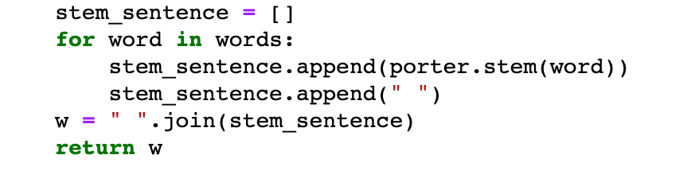
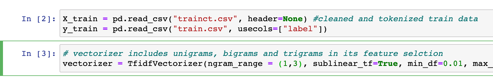
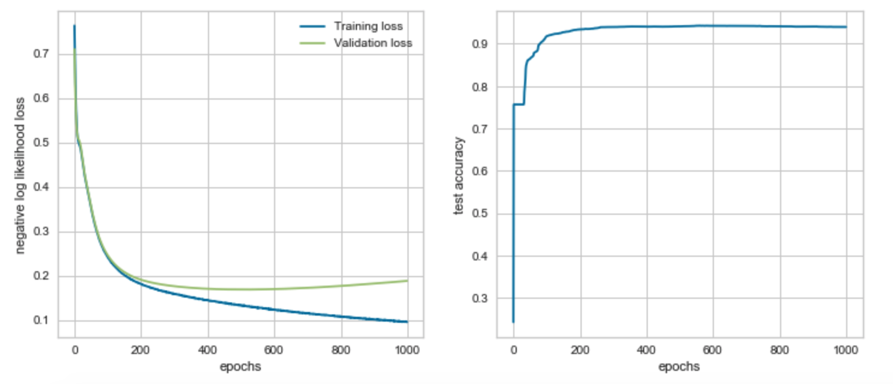

Update 3¶
Recap¶
Last quarter, our team was able to successfully implement three binary classification models that performed very well: the logistic regression model, the random forest model, and the gradient-boosted tree model. After implementing Optuna, a hyperparameter tuning framework, we were able to optimize our primary metric –the recall score–and use the new hyperparameters to find our final champion model in the lightGBM. Since we have completed the foundation or framework of our project in cleaning, tokenizing, and vectorizing our data in order to build models from it, our main goal for the first half of this quarter will be to build a deep learning model with PyTorch’s neural network and for the second half of the quarter we aim to finally extract the arrest codes. Our sponsors at Carpe Data are leaving this quarter open-ended for us in terms of project goals and what we want to achieve. Since they are also not experts in neural networks, it has been very research-based for us in terms of the type of work we are doing–looking up articles online and reading through examples of neural networks dealing with NLP.
Updating HTML Extraction and Vectorizer¶
From last quarter, certain aspects of Natural language processing were implemented into our tokenizing and cleaning function such as stemming, which treats and groups all different variants and tenses of a word (ex: arrests, arrested, arrest) with its most simple version (arrest). This was done using the function PortStemmer() from the python nltk package (python NLP package). Within the tokenized file, similar words such as the example above have been changed and treated together as shown below:


Implementation of bigrams and trigrams, which are grouped terms determined by the vectorizer for feature selection (bigrams is two word couplets, trigrams is three word couplets), in contrast to only using singular word frequencies in the previous quarter. The addition of these n-grams will increase the number of features possible in selection and will increase the time and data complexity for all the models previously tested such as logistic regression. Inside the vectorizer, the n-grams are indicated within the vectorizer parameter range from 1 to 3, indicating unigrams, bigrams, and trigrams.

Understanding Neural Networks¶
Since PyTorch is immensely customizable, we want to make sure we understand its basic architecture before playing around with hyperparameters and all the different functions it has. The first thing we have to set up is the nn.Module, which lets us create deep learning models as a class. Within the model class is the init procedure block–which defines all the layers the neural network is going to have– and the forward function–which defines how the data flows from one layer to another. For our layers, we decided to use the predefined Linear Layer nn.Linear from PyTorch. We went with the nn.Sequential class as it allows us to easily build a pipelined network.
Model Progress¶
In order to feed our data into the PyTorch neural network, we have to first convert our TFIDF sparse matrix into a PyTorch float type tensor by using the scipy library. We then also converted our labels into PyTorch tensors. After that, we built a nn.Sequential model, using sigmoid and softmax activation functions since we are dealing with binary classification. We defined a negative log loss function before running our neural network with an initial 100 epochs.

Validation loss is slightly higher than training loss, indicating that our model is fitting very nicely to the training data but there may be a little bit of overfitting. However, for the most part the two losses are roughly equal so we can safely assume that our model is fitting well. Our test accuracy increases drastically after 25 epochs. Running more epochs may increase test accuracy even further, so we decided to implement pycuda to run the neural network on a GPU instead of the CPU more efficiently.


Our AUC score in our ROC curve indicates that there is a 96.9% chance that the model will be able to distinguish between the positive and negative class. Test accuracy improves to roughly 94% after running 1000 epochs. However, after plotting the negative log loss likelihood across 1000 epochs this time around, we start to clearly see that validation loss gradually gets bigger than training loss – indicating that overfitting has occurred.
Challenges¶
Challenges mainly revolved around learning the new package Pytorch to build the neural network, as well as learning the architecture of neural networks. Each type of neural network and its construction needs to be able to binary classify our HTML websites, with each input and output layer determing feature selection. Syntax of the code also differs greatly and we read much of the documentation concerning Pytorch and Pytorch ignite for metrics.
Next Steps¶
Next steps are to continue improving our neural network model, adding a vectorizer and padding to better determine significant features with word frequency. We will also continue looking into the init procedure block and its interaction with both Convolutional Neural Networks and Recurrent Neural Networks to better address the classification of natural language processing. We are to continue to work on extracting the dates and arrest codes from our positive predicted data and expand on the interpretations of our models.